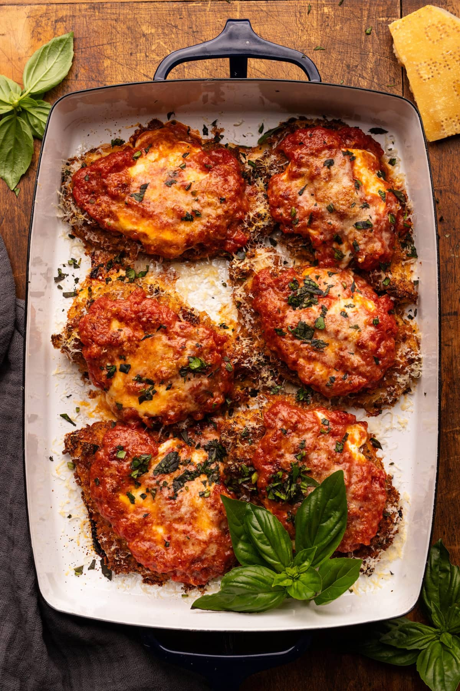

<!DOCTYPE html>
<html lang="eng"></html>
<head>
    <meta charset=" utf 8"> 
    <title>new racipe </title>
</head>
<!-- css style-->
<style>
body { 
    background-color: rgb(190, 190, 187);
}
h3 {-color:rgba(0, 0, 0, 0.89)
    :font-style :arial;
}
h4 { font styale:italic 
    ;}
p {font-style: arial ;
font-size: medium;}
</style>


<body>
    <p>
        <h3>cooking for someone else is one of greatest ways to show them how much you love them
        so here is a few racipes to show your love 
    </h3>
</p>

<ul> <li> <strong >chicken parmigiana</strong></li></ul>

<p> <h2><strong>ingredians</strong></h2></p>
<ul>
    <li> <h4>Chicken breasts </h4></li>
 use boneless skinless chicken breasts, then slice each breast in half length-wise to create 
      two cutlets. Or you can use pre-cut breasts, also known as chicken cutlets.
<li><h4>flour</h4></li>
use all-purpose flour or white whole wheat for dredging the chicken in. This is used to brown the chicken.
<li><h4>Eggs</h4></li>
      an egg mixture is used to help the breadcrumbs stick to the chicken after coating it in flour.
Breadcrumbs 
– <li><h4>for the breading mixture</h4></li >
 you can use store-bought panko breadcrumbs or homemade breadcrumbs.
<li><h4>Marinara</h4></li> –
you can use a quality store-bought marinara sauce or make a homemade sauce! See below for my top recommendations.
<li><h4>Olive oil</h4></li>
 – oil is used in the pan-fried method to brown the chicken in batches. 
If you instead bake the chicken, you’ll only need a little oil.
<li><h4>Parmesan cheese</h4></li> –
 is used to add salty richness to the breadcrumbs and for sprinkling over the chicken at the end!
Fresh mozzarella cheese – used for layering over the chicken for baking. You can use shredded or sliced pieces of mozzarella.
<li><h4>Dried Italian herbs</h4></li>
 – I like to season my own breadcrumbs using a dried Italian herb blend.
Garlic powder – used for flavoring the breadcrumb mixture.
Black pepper & salt – for flavor.
Fresh basil – for sprinkling over top of the finished chicken parmesan!
</ul>
<a href ="https://asimplepalate.com/blog/chicken-parmigiana/">for the full recipe clilck here</a>
</body>
